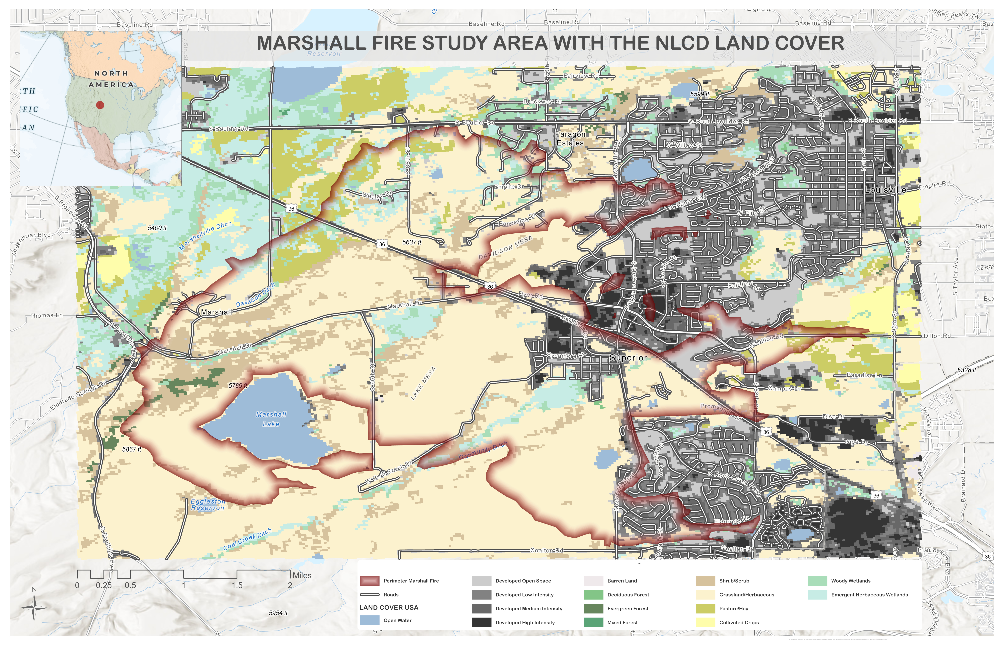
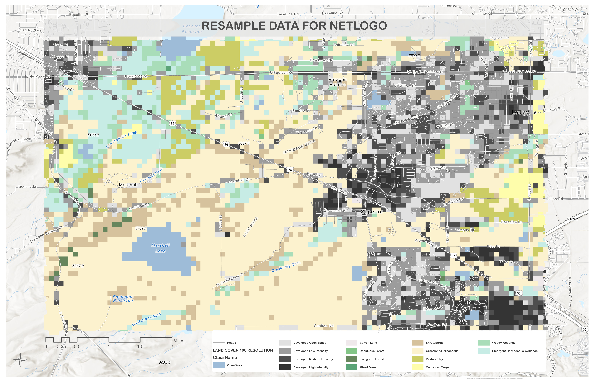
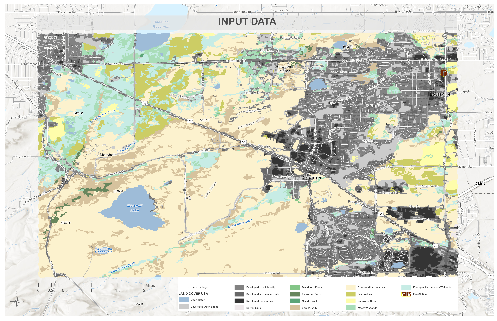
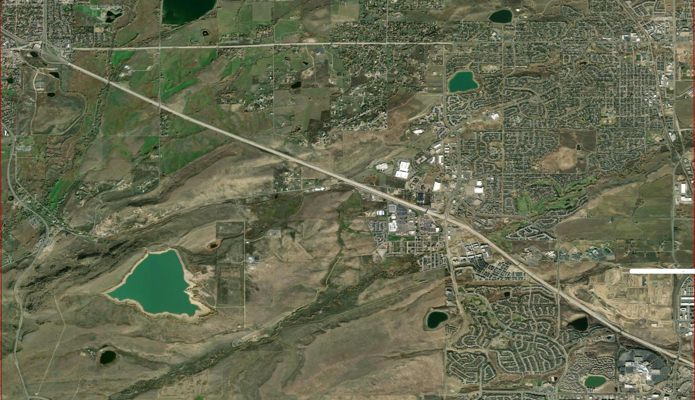
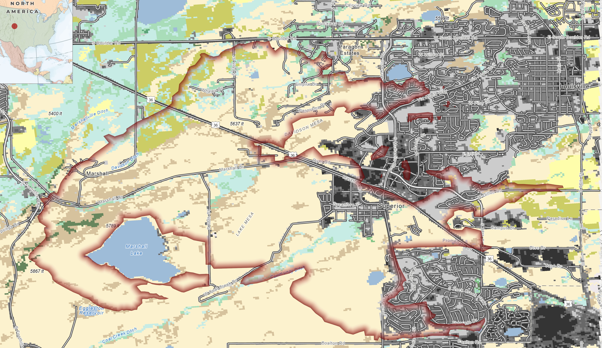

Overview
On December 30, 2021, the Marshall Fire ignited near the Marshall area south of Boulder, Colorado, and spread rapidly eastward into the communities of Superior and Louisville under extreme mountain-wave wind conditions. It destroyed more than 1,000 homes and became one of the most destructive urban-interface wildfires in Colorado’s history.
This project builds a spatially explicit agent-based model (ABM) of the Marshall Fire using NetLogo, integrating real GIS data to simulate how wildfire spreads and interacts with suppression efforts. The model does not aim to reproduce the fire with physical accuracy — instead, it demonstrates how complex fire behavior emerges from localized rules governing fuel, wind, terrain, and human response.
The Marshall Fire is particularly well-suited for spatial ABM because its behavior was legible in geographic terms: fuel type, wind direction, road networks, and suburban density all shaped how it spread. A relatively simple model can generate interpretable results against a real event.
Spatial Data
Three real-world geographic datasets drive the model. Without a spatially explicit fuel surface, every patch would be equally flammable and the simulation would produce no meaningful geographic pattern.
-
01
NLCD 2021 Land Cover Raster
From the Multi-Resolution Land Characteristics Consortium (mrlc.gov). Provides classified land cover for the study area — 15 categories from open water to evergreen forest. Reprojected from NAD83 Albers to WGS84, clipped to study extent, resampled to 100m resolution for NetLogo compatibility, and exported as ESRI ASCII grid.
-
02
Roads Shapefile — Census TIGER 2023
Boulder County road network, clipped and reprojected to WGS84. Used in two roles: as partial fire spread barriers (road-crossing-factor slider) and as the preferred travel surface for firefighter agents.
-
03
Marshall Fire Burn Perimeter — NIFC WFIGS 2021
Used in ArcGIS Pro only. Defined the geographic study extent and served as a reference boundary for comparing simulated burn output against the observed fire footprint.

Study area — NLCD 2021 land cover, Marshall Fire perimeter, road network. Boulder County, CO.

NLCD land cover raster after resampling to 100m cell size — ArcGIS Pro preparation for NetLogo import.

Input data layers prepared in ArcGIS Pro — land cover, roads, and fire perimeter aligned to common CRS.

NetLogo model interface after setup — landscape colored by flammability class, fire origin set near Marshall.
Model Design — Agents & Rules
The model contains three agent breeds. Each operates under distinct rules that together produce the emergent fire spread and suppression behavior visible in the simulation.
Spread to neighboring patches based on flammability + wind directional bonus + 0.02 base probability. Convert to ember agents after spreading. Spotting mechanism allows jumping several patches downwind.
Fading remnant of fire agents. Color decreases each tick until they die. Represent the trailing edge of the burn front — windblown embers that can still ignite patches ahead of the main front.
Two-phase movement: road-preferring travel toward the fire line, then free movement once engaged. Organized into squads targeting different sectors. Stuck-recovery rule prevents immobilization. Energy depletes over time.
Flammability Assignment by Land Cover
Each NLCD land cover code was translated into a flammability value from 0 to 1. These encode a defensible relative ordering of combustibility based on fuel characteristics — not empirically calibrated fire behavior coefficients, but a plausible ranking that allows the landscape structure to drive geographic patterns in the simulation.
| Code | Land Cover | Flammability | Visual | Category |
|---|---|---|---|---|
| 42 | Evergreen Forest | 0.88 | Very High | |
| 43 | Mixed Forest | 0.82 | High | |
| 41 | Deciduous Forest | 0.78 | High | |
| 52 | Shrub/Scrub | 0.70 | High | |
| 71 | Grassland/Herbaceous | 0.68 | High | |
| 81 | Pasture/Hay | 0.48 | Moderate | |
| 82 | Cultivated Crops | 0.38 | Moderate | |
| 90 | Woody Wetlands | 0.22 | Low | |
| 21 | Developed Open Space | 0.12 | Very Low | |
| 31 | Barren Land | 0.12 | Very Low | |
| 22 | Developed Low Intensity | 0.10 | Very Low | |
| 23 | Developed Medium Intensity | 0.07 | Very Low | |
| 24 | Developed High Intensity | 0.04 | Very Low | |
| 11 | Open Water | 0.00 | Non-burnable |
Simulation Recordings
Three screen recordings capture the model at different parameter settings — baseline spread, wind-driven conditions, and active firefighter suppression. Each run begins at the same ignition point near Marshall and spreads eastward toward Superior and Louisville.
Run 1 — Baseline spread, no suppression
Run 2 — Wind-driven eastward spread, wind 0.55
Run 3 — Firefighter suppression active, 15 agents
Comparison — Satellite Imagery vs. NetLogo Output
The simulated burn extent is compared directly against post-fire satellite imagery of the Marshall Fire footprint. Areas of overlap indicate where the model successfully captured the geographic pattern of spread; divergences reveal where wind field simplifications and road-barrier assumptions produced different outcomes from the observed event.


Left: Post-fire satellite imagery showing the actual Marshall Fire burn footprint across Superior and Louisville. Right: Simulated burn extent from NetLogo ABM export, re-projected and symbolized in ArcGIS Pro. The eastward spread pattern is consistent, though the simulation under-represents spread into developed medium-intensity areas due to their low assigned flammability.
Output — ArcGIS Pro Burn Map
At the end of each run, the model exported two ASCII raster files: a final state map (0 = non-burnable, 1 = unburned, 2 = burned, 3 = roads) and a burn-timing map recording the simulation tick at which each patch first ignited. These were brought back into ArcGIS Pro for final cartographic output and comparison with the observed NIFC fire perimeter.

Burn timing map — color ramp from earliest ignition (dark red) to latest (yellow). Compared against NIFC Marshall Fire perimeter overlay.
Parameter Runs — Results Summary
| Run | Firefighters | Wind Strength | Burned Cells | % Burned |
|---|---|---|---|---|
| 1 | 0 | 0.00 | 4,968 | 25.7% |
| 2 | 0 | 0.10 | 9,858 | 38.75% |
| 3 | 15 | 0.05 | 9,955 | 39.13% |
| 4 | 20 | 0.05 | 9,010 | 35.4% |
| 5 | 5 | 0.15 | 10,069 | 40.0% |
Limitations
- —Flammability values are experimental relative rankings, not calibrated fire behavior fuel models.
- —Road patches are wider than real roads at 100m cell size, exaggerating their barrier effect.
- —Wind is a constant directional vector, not the spatially shifting mountain-wave wind field of the actual event.
- —The documented ignition involved two separate events that merged — the model uses a single origin cluster.
- —Firefighter agents suppress by proximity rules only — no water supply, engine capacity, or tactical command modeled.
Despite these simplifications, the model achieves its core objective: linking real GIS data to an ABM, assigning spatially differentiated patch behavior from land cover, introducing adaptive multi-agent movement, and producing outputs comparable to observed data. This kind of model has direct relevance to emergency planning, evacuation logistics, and infrastructure siting at the wildland-urban interface.